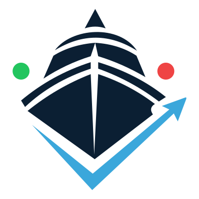

ROTTA GIUSTA · ESPLORAZIONE UX / 01 · 9 SETTEMBRE 2026
Una rotta da scegliere,
un passo da iniziare.

Due stati della stessa esperienza, su telefono e desktop. Superfici chiare, un consiglio riconoscibile e un ambiente dedicato al Carteggio. Sono proposte da discutere, non schermate approvate.
Apri la bozza navigabile →Leggi il passaggio di consegneDati dimostrativi. Archivio vuoto oppure 25 risposte simulate nei quiz base, di cui 5 errate. Conteggi e selezione calcolati dal motore del repository. Nessuna data d’esame, nessun progresso personale letto o salvato. Nei riquadri puoi scorrere e aprire gli ingressi; i pannelli indicano dove finisce la bozza.
01 / Telefono · 375 px
Le due viste hanno un’altezza iniziale di 812 px. Scorri dentro ciascuna per vedere la scelta libera e la conservazione dei progressi.
02 / Desktop · 1280 px
Qui consiglio e Carteggio sono affiancati. Le due viste mantengono lo stesso ordine di lettura del telefono.
Archivio vuoto Apri ↗Prime attività Apri ↗
03 / Dove cercheresti i Segnali?
Il confronto cambia un solo ingresso. Entrambe le varianti restano disponibili dopo il primo utilizzo.
VARIANTE AUn accesso nella mappa
Rotta → Riconosci fanali e segnali
Si vede subito come attività autonoma. Occupa uno degli accessi nella scelta libera; il legame con COLREG viene spiegato nel passaggio successivo.
Prova l’accesso diretto →VARIANTE BDentro l’argomento COLREG
Rotta → COLREG e segnalamento → Segnali
Si incontra nel contesto pertinente. Serve un passaggio in più; nella bozza l’ingresso COLREG cita anche l’attività visiva per renderla rintracciabile.
Prova l’accesso dall’argomento →
Tre cose su cui confrontarci- La direzione visiva è abbastanza vicina all’identità che cerchi?
- Al primo ingresso preferisci questo consiglio immediato sui quiz, oppure più enfasi iniziale sul Carteggio?
- Per ritrovare i Segnali, ti è più naturale la mappa o l’argomento COLREG?